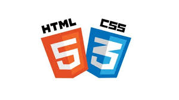

HTML CSS
Je domine 70% avec les intégrations JS.
PHP
Je domine 70% avec les intégrations JS.
PHP
Je domine 70% avec les intégrations JS.
BOOTSTRAP

Je domine 50% avec les intégrations JS.
Je suis développeuse web junior, après d’avoir passé 6 mois en formation chez SIMPLON. Cette expérience m’a permis d’acquérir autonomie et confiance en moi, malgré le fait que je sortais à peine de l’école. J’ai ainsi pu renforcer. Même si je l’expérience profecionnelle.
Je domine 70% avec les intégrations JS.
Je domine 70% avec les intégrations JS.
Je domine 70% avec les intégrations JS.
Je domine 50% avec les intégrations JS.
Developper web junior
6, Rue Gioffredo
Age 40 ans
Téléphone 0601025561
M'envoyer: un e-mail